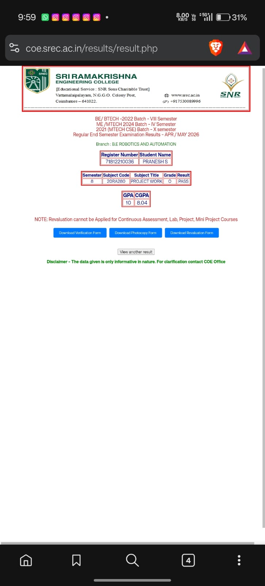

Hello, I'm
Robotics Engineer · ROS 2 · Autonomous Mobile Robots
focus: Autonomous Navigation_
I build ROS 2 software for warehouse autonomous mobile robots (navigation, safety, docking and mission logic) and take it from the lab to robots running at customer sites.
Real run · QR code navigation robot
8+
Projects
2
Research Papers
2
Awards
4
Industry Roles
01 / About

I'm an Associate Robotics Engineer at Goat Robotics, where I build ROS 2 software for autonomous mobile robots that move goods in warehouses. My work covers navigation, safety, docking and load handling, mission logic, and keeping robot software fast and reliable on embedded computers.
Day to day, I take features from design and simulation to testing on real robots, work on-site at customer locations to deploy and support robots, debug issues from field logs, and roll out verified updates across a fleet of robots.
I hold a B.E. in Robotics & Automation from Sri Ramakrishna Engineering College. I received the Bright Beginning Award at Goat Robotics' Founders' Day 2025 and won the Best Startup Award at SREC INNOVATE24.
02 / Expertise
Nav2-based navigation for warehouse AMRs: lane and waypoint following, path controllers and on-robot tuning.
LiDAR-based safety regions around the robot that detect obstacles and keep people, robots and loads safe.
Marker-based precision docking under trolleys and racks, lift and payload checks, and safe undocking.
State-machine based task flows that run warehouse missions step by step, handle errors and recover safely.
Reducing CPU load on embedded robot computers without changing behaviour: profiling, DDS/QoS tuning and C++ ports.
On-site work at customer locations: deploying and testing robots, bag replay, log analysis, sensor and odometry diagnosis, and verified rollouts.
03 / Projects
Final year project (Qorix): hybrid indoor navigation that combines floor-mounted QR codes with line following, plus a web dashboard with live camera feed, robot modes and emergency stop. 98.5% detection accuracy and 95%+ navigation success. Presented at ICOEI 2026 (IEEE).
Tracked prototype, driven from a phone app, designed to collect invasive water hyacinth from lakes and other water bodies.
Maze-solving and autonomous path planning algorithms for TurtleBot3, developed in ROS 2 simulation and run on the real robot.
Smart waste bin that separates recyclables using an AI audio classification model.
Custom vacuum gripper (end-of-arm tool) for picking sand cores, designed in SolidWorks and tested on a FANUC R-2000 industrial robot, with motion planning and the automation workflow.
Autonomous docking for TurtleBot3 in ROS 2: the robot finds its charging dock using LiDAR, aligns itself and docks precisely to recharge on its own.
View CodeFood delivery robot in a custom Gazebo café: Nav2 navigation to the kitchen and tables, multi-table orders, delivery confirmation with timeout, and cancellations.
View CodeRainfall detection system that uses sensors to send real-time alerts.
04 / Research
Paper 01 · ICOEI 2026 · IEEE
Presented at the 9th International Conference on Trends in Electronics and Informatics, SCAD College of Engineering and Technology, Tirunelveli · 21–23 April 2026. Accepted for publication in IEEE Xplore.
Paper 02 · ICICV 2025 · IEEE
Presented at the 6th International Conference on Intelligent Communication Technologies and Virtual Mobile Networks, Francis Xavier Engineering College, Tirunelveli · 17–19 June 2025.
05 / Gallery
06 / Experience
Developed ROS simulation projects and robotic automation solutions. Optimized robot performance for industrial robotics applications.
Developed a ROS auto-docking solution for autonomous charging alignment. Implemented autonomous navigation workflows within the ROS ecosystem.
Handled robot design, motion planning, automation workflow, mechanical integration, and industrial testing for an industrial pick-and-place robot.
07 / Education
Coimbatore, Tamil Nadu. Engineering degree focused on robotics, automation, and intelligent systems.
08 / Recognition
Received the Bright Beginning Award at Goat Robotics' Founders' Day 2025.
Won "The Best Startup Award" for an innovative robotics project at SREC INNOVATE24.
Three-day national workshop on SLAM navigation and autonomous map building.
Participant in India's national hackathon.
Infosys Springboard
GUVI
Introduction to Industry 4.0 and the Industrial Internet of Things.
Certified for social innovation in the Industry 4.0 domain.
Hands-on workshop on advanced robotics technologies.
09 / Contact